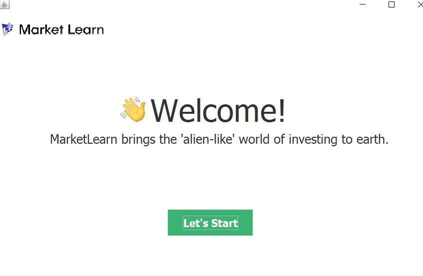

A Computer Science student who has a passion for being at the forefront of providing solutions to intricate puzzles
Being a computer science student has opened my eyes to a whole new world I never knew existed. What I instantly noticed about my choice of degree is that the more I learn, the more I understand that I have so much more to discover. This is what excites me. My love of the unknown when it comes to technology is what initially drew me to Computer Science and I'm eager to showcase my skills; developing technolgies that have an impact on people world-wide.
Recent Work

A* Search Pathfinding Application
A pathfinding visualizer based on the A* pathfinding algorithm written in Java. Based on one of the most successful search algorithms to find the shortest path between nodes and graphs, this uses information about path cost and heurristics to find the solution path

Suduko Solver
Solves any valid Sudoku puzzle using recursive backtracking. Involves a GUI allowing user to input certain values into specific cells in the 9x9 grid. User can then click the 'solve' button which instantaneously solves and displays the solved puzzle on that exact grid

London Property Marketplace Application
An application used for exploring properties that are available for temporary rental in London. Utilizes a real world data set of the London property market provided by Airbnb

Savanna Simulation
A simulation of a Savanna biome written in Java that simulates the interaction of different species as well as real life scenarios and their impact including disease, weather, time and much more

Stock Watch
An application built in Java allowing users to pick their favourite stocks on the NASDAQ stock exchange, create a watchlist and get real time email notifications at certain price levels. 2FA and SHA256 used together to create a robust authentication system (Code is not available at this moment in time due to the extending of the application)

2D Pool Simulator
Written in Visual Basic, this was one of the first serious applications I programmed. This was to be examined by AQA and was my NEA A-Level Computer Science Project. Due to my love of Physics; I created a 2D pool simulator, simulating the affect of mass on the motion of a game commonly known as Pool
Get In Touch
During my third year of univeristy, I will be taking a year out to undertake a placement at a company related to a technology/software engineering role. I would love any potential companies to get in touch through here for any enquires! You may get in touch with me below by sending a message directly to my primary email.
{kind=link}